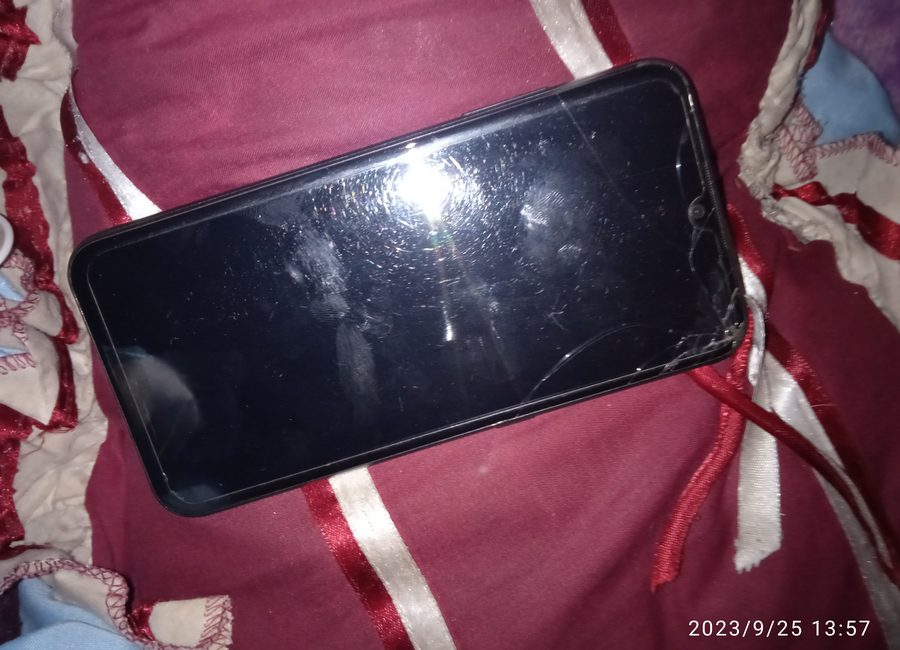
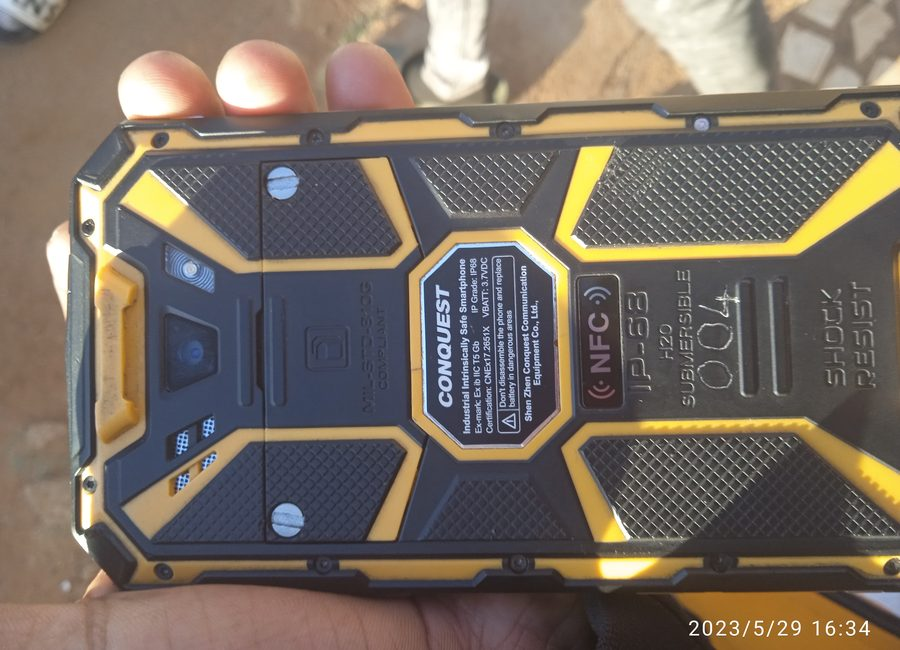

Work examples
Each photo has a caption so visitors understand what they are seeing.

Component inspection

CPU / component handling

Diagnostic tools

Phone repair work

Phone testing

Desktop wiring

Board / chip work

Software troubleshooting